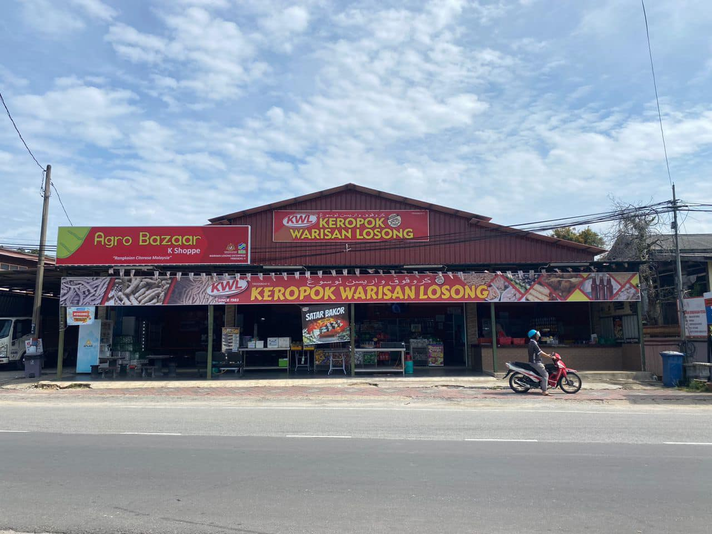

Keropok lekor is a traditional Malay fish cracker snack originating from the state of Terengganu, Malaysia
It is made from fish and sago flour and seasoned with salt and sugar.
It is slightly greyish and gives off a fishy taste and smell which becomes more prominent as it cools down after frying.
It is usually made by grinding fish or vegetables into a paste, mixing it with sago, and then deep-frying it.
It comes in three main forms: lekor (long and chewy), rebus (steamed), and keping (thin and crispy).
Like This Food?
Recipe
Clean, remove scales, skin and gut and debone 1 kg Indian mackerels or fresh sardines.
Weigh 250 g of the fish flesh and process it with 50 g ice, 3 g salt, 3 g anchovy granules and
3 g baking powder in a food processor.
Add in 185 g sago starch a little at a time until all starch is used up and continue processing until a ball is formed.
Shape the dough into a 2 cm diameter x 7 cm length logs by rolling them on a flat surface and sprinkling sago
starch all over the surface so that they don’t stick to each other.
Drop the dough sticks into 3.5 liters of simmering water.
Poach till they float and drain them out.
Let cool and deep fry at 150°C until crispy and golden brown.
Drain and serve hot with chili sauce.
Recommended Location:
Keropok Warisan Losong

Address:
74, Jalan Kuala Hiliran, Kampung Losong Haji Su, 21000 Kuala Terengganu, Terengganu